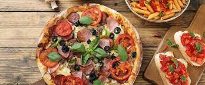
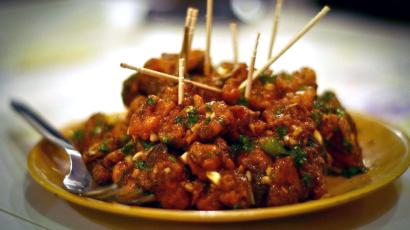

|
Indian 
Staple foods of Indian cuisine include pearl millet (bājra), rice, whole-wheat flour (aṭṭa), and a variety of lentils, such as masoor (most often red lentils), tuer (pigeon peas), |
Italian Italian cuisine is a Mediterranean cuisine consisting of the ingredients, recipes and cooking techniques developed across the Italian Peninsula since antiquity, and later spread around the world together with waves of Italian diaspora. |
Chinese A number of different styles contribute to Chinese cuisine but perhaps the best known and most influential are Cantonese cuisine, Shandong cuisine, Jiangsu cuisine (specifically Huaiyang cuisine) and Sichuan cuisine. |